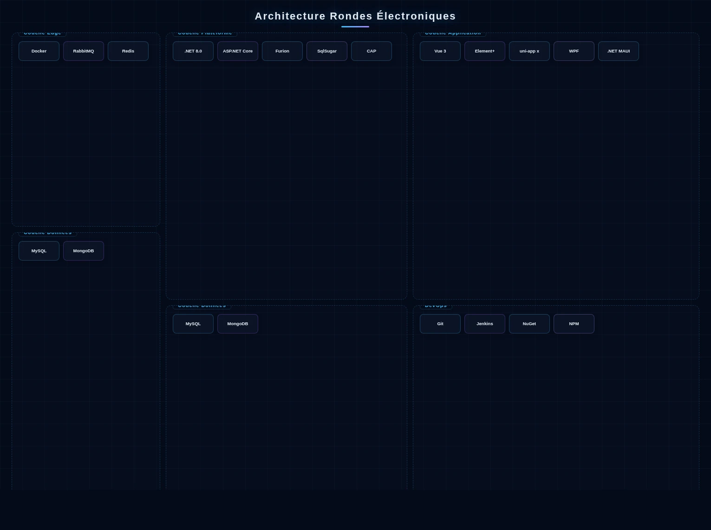

La solution de rondes électroniques d'AXLTeco garantit que le personnel de sécurité effectue les tâches de patrouille comme prévu et détecte les dangers en temps utile.
Architecture de la Solution

Le Système de Rondes Électroniques adopte une architecture à quatre couches Point-Terminal-Plateforme-Données. Les points de ronde utilisent des tags NFC/QR/Bluetooth déployés aux positions clés. Les terminaux mobiles incluent des appareils dédiés et une application smartphone développée avec uni-app x (Vapor Mode), supportant le pointage hors ligne, la collecte de preuves photo, le rapport vocal et l'enregistrement de trajectoires GPS. La couche plateforme est construite sur .NET 8.0 + ASP.NET Core + Furion, avec DotNetCore.CAP garantissant la cohérence transactionnelle pour les événements anormaux et les flux de bons de travail, RabbitMQ orchestrant les tâches de ronde et les flux d'événements anormaux, Redis Cluster mettant en cache les itinéraires et les états de planification, MySQL stockant les registres de patrouille et les données d'évaluation, MongoDB stockant les images et voix sur site, et SqlSugar fournissant le mappage ORM multi-sources. Le côté gestion construit la conception d'itinéraires, la planification intelligente, la surveillance en temps réel, l'alerte anormale et le reporting multidimensionnel avec Vue 3 + Element Plus; les clients de gestion de bureau sont construits sur WPF ou .NET MAUI. Supporte l'intégration avec les systèmes de sécurité et de bons de travail. DevOps utilise Git + Jenkins + NuGet/NPM pour l'intégration et le déploiement continus, avec Docker pour le déploiement standardisé.
Composition de la Solution
Scénarios d'Application

Applicable aux communautés résidentielles, parcs industriels, complexes commerciaux, campus et hôpitaux. Lié aux systèmes de vidéosurveillance.
Avantages de la Solution
Multiples méthodes de pointage ; localisation en temps réel et relecture de trajectoire ; signalement instantané d'incidents ; analyses complètes ; liaison vidéosurveillance.
Valeur de la Solution
Garantir l'exécution des tâches de patrouille, éliminant les risques d'oubli. Améliorer la vitesse de réponse de la sécurité et réduire les taux d'incidents.
Pratique Projet
Systèmes de rondes électroniques déployés pour de multiples parcs industriels, complexes commerciaux et communautés résidentielles.